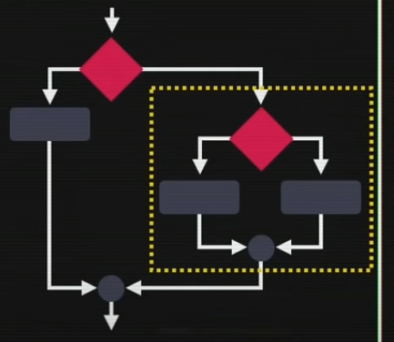
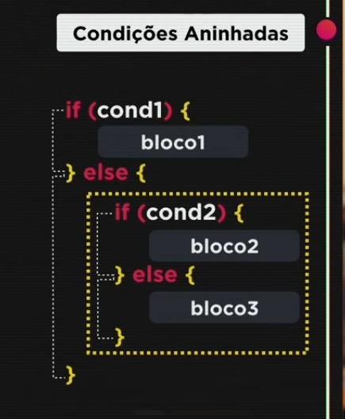
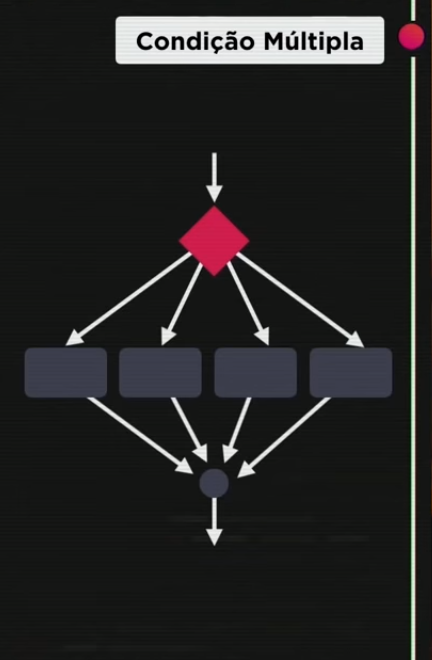
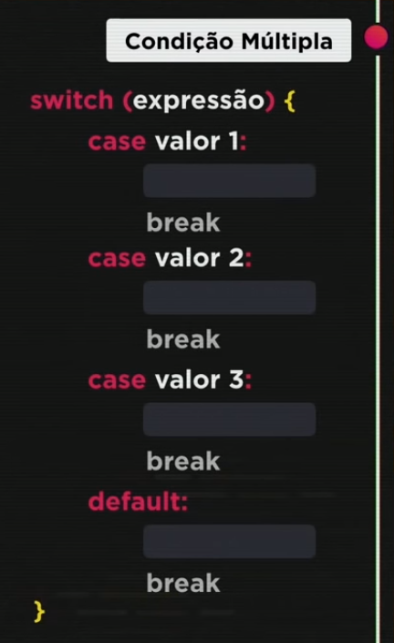

Aula 11 e 12
Condições
No JavaScript, temos vários tipos de condições: Simples, Compostas, Aninhadas e Múltiplas (Switch Case)
Sequência
O condicional altera o fluxo do código, a sequência. Dentro da programação essa alteração é chamada de DESVIO CONDICIONAL.

Para construir a estrutura condicional, usamos a palavra reservada if, a condição a ser testada entre parênteses, e o bloco de código a ser executado caso o teste retorne verdadeiro entre chaves {}. Caso a consição retorne falso, utiliza-se o else e mais um bloco de código para este caso.

Tipos de Condição
- Condição simples
- Condição Composta
 Exercício 008
Exercício 009
Exercício 010
Exercício 011
Exercício 008
Exercício 009
Exercício 010
Exercício 011
- Condições aninhadas
As condições aninhadas representam vários níveis de condições, sendo uma dentro da outra (aninhada). Para este tipo de estrutura, utilizamos o if para o primeiro teste, e o else if pelo menos uma vez.
  Exercício 011 Exercício 012- Condições Múltiplas (Switch Cases)
Servem para valores fixos. Não são úteis em casos de análises de intervalos, como os tipos anteriores, por exemplo. Também são chamadas de Swicth Cases
Para construir essa estrutura, utilizamos a palavra reservada Switch, seguida de expressão entre parênteses (), e o bloco entre chaves {}. Dentro do bloco, listamos os casos, utilizando 'case', seguido do valor, dois pontos (:) e o bloco a ser executado caso o caso seja selecionado. Por fim, definimos um default, que será executado caso o condicional não entre em nenhum dos cases. Essa estrutura possui uma particularidade: dentro de cada case, após as linhas de código serem executadas, um comando 'break' precisa ser setado para que o condicional quebre execução. Essa estrutura é usada para valores pontuais, sendo que vale para numbers do tipo integer e strings
 Exercício 013